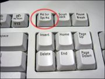
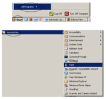
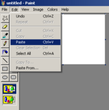
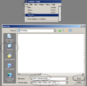

| Home |
| 1. | Find out what key(s) on your keyboard you need to press to take a screenshot. It may be just pressing PrintScreen, PrtScrn, or pressing Fn or Ctrl then pressing another key. |  |
| 2. | Press the screenshot keyboard shortcut that your keyboard uses to take a screenshot.(On the page that you want to take a screenshot.) | |
| 3. | i. Open Microsoft Paint . To do this, click Start > All Programs > Accessories > Paint. Click inside the white part of the screen. (OR) ii. Open Microsoft Word . To do this, click Start > All Programs > Microsoft Word. Click inside the white part of the screen. |
 |
| 4. | Go to the Edit menu and click Paste or you can press and hold "Ctrl" and click V button . |  |
| 5. | Click File > Save As Type in a file name for your file. Choose a place to save, like the Desktop, and click save. |
 |